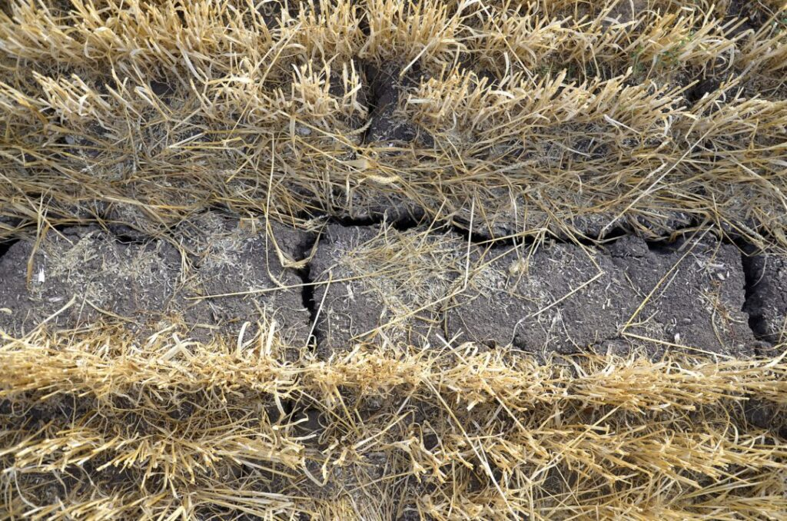

Effects of Soil Pollution
Soil pollution impacts the environment, human health, and agricultural productivity.
Detrimental Effects of Soil Pollution
Soil pollution has a wide range of negative consequences for the environment and human health.
- Reduced Soil Fertility:
- Contamination of Food and Water:
- Loss of Biodiversity:
Reduced soil fertility due to soil pollution is a major threat to global food security and environmental sustainability. Soil pollution is the contamination of soil with harmful substances, such as heavy metals, pesticides, and industrial waste. These pollutants can reduce soil fertility by:
Killing or harming soil microbes, which are essential for nutrient cycling and soil health.
Reducing the availability of essential nutrients to plants.
Changing the pH of the soil, making it more or less acidic or alkaline, which can make it difficult for plants to grow.
Compacting the soil, making it difficult for roots to grow and for water and air to penetrate.
Salinizing the soil, making it too salty for plants to grow.
Reduced soil fertility can lead to a number of problems, including:
* Lower crop yields
* Reduced quality of crops
* Increased need for fertilizers and pesticides
* Increased susceptibility of crops to pests and diseases
* Increased risk of soil erosion
* Contamination of water resources


Soil pollution can lead to the contamination of food and water in a number of ways.
Food Contamination
Food contamination occurs when harmful substances such as bacteria, viruses, parasites, chemicals, or toxins are introduced into food, making it unsafe to eat. This contamination can occur at any point during food production, processing, transportation, or preparation. Microbial contamination is one of the most common forms, with bacteria like Salmonella, E. coli, and Listeria being notorious for causing foodborne illnesses. These pathogens thrive in improperly handled or undercooked foods, particularly meat, dairy, and produce. Chemical contamination can also arise from pesticides, heavy metals, food additives, or industrial pollutants. Long-term exposure to such contaminants can lead to serious health issues, including cancer, neurological disorders, and reproductive problems. Physical contamination involves foreign objects, like glass, metal, or plastic, getting mixed into food products during manufacturing. To prevent food contamination, proper hygiene and food safety practices are essential, including washing hands and surfaces, cooking food to the right temperature, and storing food correctly. Regulatory agencies, such as the Food and Drug Administration (FDA) and the World Health Organization (WHO), set standards to ensure food safety, but individuals also play a crucial role in reducing the risk of contamination by following safe food handling and consumption practices.

Water contamination
Leaching: Pollutants can leach through the soil and into groundwater. This is especially true for soluble pollutants, such as nitrates and pesticides. Once groundwater is contaminated, it can be difficult and expensive to clean up.
Runoff: During rain events, pollutants on the surface of the soil can be washed away by runoff water. This runoff can then enter streams, rivers, and lakes, contaminating the water supply.
Contamination of food and water due to soil pollution can have a number of negative health effects on humans and animals, including:


Acute health effects: Short-term exposure to high levels of pollutants can cause acute health effects, such as vomiting, diarrhea, and headaches.
Chronic health effects: Long-term exposure to pollutants can lead to a number of chronic health effects, such as cancer, neurological disorders, and reproductive problems.
Developmental effects: Exposure to pollutants during pregnancy and early childhood can have a number of negative developmental effects on children, including reduced intelligence, impaired cognitive function, and birth defects.
Soil pollution can harm or kill beneficial microorganisms and other organisms that live in the soil. This can lead to a loss of biodiversity, which can have a ripple effect on the entire ecosystem.
Soil pollution can lead to loss of biodiversity in a number of ways.
Direct toxicity: Soil pollutants can be directly toxic to soil organisms, including bacteria, fungi, worms, insects, and other invertebrates. This can lead to a decrease in the diversity and abundance of soil organisms.
Indirect toxicity: Soil pollutants can also indirectly harm soil organisms by disrupting their food webs and habitats. For example, heavy metals can poison earthworms, which are important for nutrient cycling and soil aeration.
Degradation of soil structure: Soil pollutants can also degrade soil structure, making it more difficult for soil organisms to survive and thrive. For example, compaction can reduce the amount of oxygen and water available to soil organisms
Changes in soil pH: Soil pollutants can also change the pH of the soil, which can make it more difficult for some soil organisms to survive. For example, acid mine drainage can make soil too acidic for many soil organisms.
Loss of soil biodiversity can have a number of negative consequences, including:
* Reduced soil fertility: Soil organisms are essential for nutrient cycling and soil health. Loss of soil biodiversity can lead to reduced soil fertility, making it more difficult to grow crops.
* Increased risk of soil erosion: Soil organisms help to bind soil particles together, reducing the risk of soil erosion. Loss of soil biodiversity can increase the risk of soil erosion, which can damage ecosystems and pollute waterways.
* Decreased ecosystem services: Soil organisms provide a number of important ecosystem services, such as nutrient cycling, water filtration, and pest control. Loss of soil biodiversity can reduce the ability of soils to provide these services.
* Increased risk of pests and diseases: Soil organisms help to keep pests and diseases in check. Loss of soil biodiversity can make ecosystems more vulnerable to pests and diseases.